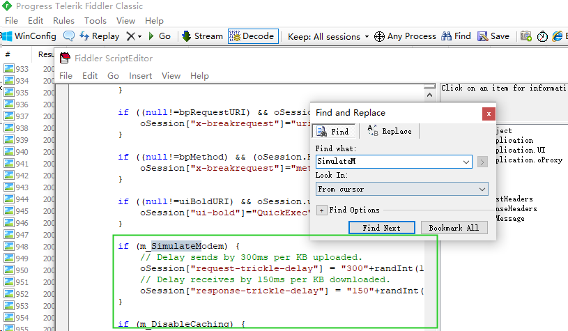

Fiddler使用
由于最近需要模拟弱网环境的测试，故学习使用Fiddler并利用Fiddler的模拟延迟设置来模拟弱网的环境。
安装
在官网下载Fiddler Classic
https://www.telerik.com/download/fiddler
设置证书
浏览器
Tools→Options→Actions→Trust Root Certificate
见下图操作，先信任证书，然后将证书导入到桌面
在浏览器导入证书：
手机上安装证书
手机上安装证书(IOS)：
开启允许远程连接：
保存设置，重启Flidder，然后在手机连接电脑ip:port，端口号为上面的8888
访问到如下页面说明设置成功，然后点击下载证书
信任证书：
设置→通用→描述文件→信任证书操作
设置→通用→关于本机→证书信任设置→开启完全信任
设置代理
对于web浏览器，Fiddler默认系统代理就能直接抓到浏览器的包
对于移动端设备或其他远程连接设备，与目标设备位于同一网段，在WLAN设置中，配置HTTP代理，点击手动模式，服务器和端口同上，设置完成后，Flidder就能抓到移动端的HTTP包了
Fiddler使用
Filter过滤器
点击Filters模块，勾选Use Filters，设置完规则后在Actions中运行过滤器就能按照指定规则过滤HTTP包

- Hosts：根据主机名称过滤
- 可以选择内网/外网，正向/反向/模糊匹配过滤
- Client Process：根据客户端进程的相关信息过滤
- Request Headers：根据请求头的相关字段过滤
- URL筛选
- 其他请求头设置
- Breakpoints：断点
- 可以在抓到包含指定类型的请求头的包之后断点
- Response Status Code：根据响应码过滤
- Response Type and Size：根据响应类型和响应报文大小进行过滤
- Response Headers：根据响应头进行过滤
模拟弱网环境
按照上图的操作可以打开模拟限制网速模式
我们还可以根据需要修改延迟的时间，在Rules→Customize Rules中编辑脚本：

默认的设置如下：
1 | if (m_SimulateModem) { |
request-trickle-delay中的值代表每KB的数据被上传时会被延时多少毫秒；
response-trickle-delay则对应下载时每KB的数据会被延时多少毫秒。
在上图中的是经过修改的脚本，目的是在一个延迟基准上增加一个随机偏移以模拟网络波动的情况，具体如下：
1 | // 首先先自定义一个随机数生成函数 |
参考链接
https://blog.csdn.net/weixin_38723657/article/details/103453110